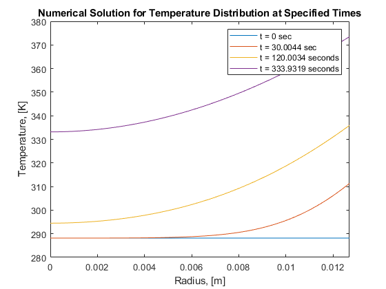
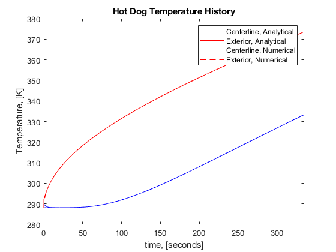
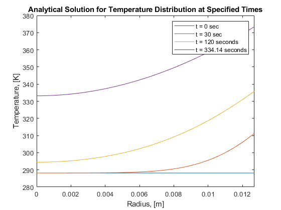

clear
clc
close all
format compact
densityHotDog = 880;
kHotDog = 0.52;
cHotDog = 3350;
diameterHotDog = 0.0254;
radiusHotDog = diameterHotDog/2;
initialTemp = 15 + 273.15;
maxTs = 100 + 273.15;
finalTemp = 60 + 273.15;
gasTemp = 295 + 273.15;
coalsTemp = 425 + 273.15;
emissivityCoals = 0.8;
emissivityHotDog = 0.45;
diameterCoals = 0.045;
deltar = 0.0001;
M = radiusHotDog/deltar;
alphaHotDog = kHotDog/(densityHotDog*cHotDog);
beta = 1/((coalsTemp + gasTemp)/2);
velocityAir = sqrt(9.81*beta*(coalsTemp - gasTemp)*diameterCoals);
hRad = 5;
TsurfaceHCalc = (initialTemp + gasTemp)/2;
lowTemp = 400;
highTemp = 450;
nuLow = 26.41e-6;
nuHigh = 32.39e-6;
kAirLow = 33.8e-3;
kAirHigh = 37.3e-3;
PrLow = 0.690;
PrHigh = 0.686;
nuFilm = nuLow + (TsurfaceHCalc - lowTemp)*(nuHigh-nuLow)/(highTemp-lowTemp);
kAirFilm = kAirLow + (TsurfaceHCalc - lowTemp)*(kAirHigh-kAirLow)/(highTemp-lowTemp);
PrFilm = PrLow + (TsurfaceHCalc - lowTemp)*(PrHigh-PrLow)/(highTemp-lowTemp);
Re = velocityAir*diameterHotDog / nuFilm;
C = 0.683;
mConst = 0.466;
Nu = C*Re^mConst*PrFilm^(1/3);
hConv = Nu*kAirFilm/diameterHotDog;
hTot = hRad + hConv;
deltatSurface = (deltar^2 * M * kHotDog)/(alphaHotDog*(2*M*kHotDog - kHotDog + 2*hTot*M*deltar));
deltatCenter = (deltar^2)/(4*alphaHotDog);
deltatInterior = (deltar^2)/(2*alphaHotDog);
if (deltatInterior < deltatSurface && deltatInterior < deltatCenter)
deltat = deltatInterior;
elseif deltatCenter < deltatSurface
deltat = deltatCenter;
else
deltat = deltatSurface;
fprintf('Surface Stability')
end
Fo = (deltat*alphaHotDog)/deltar^2;
temperature = zeros(20000, ceil(M)+1);
time=zeros(20000,1);
temperature(1,:) = initialTemp;
i=1;
while temperature(i,1) < finalTemp
for j=1:ceil(M)+1
if j==1
temperature(i+1,j) = 4*Fo*temperature(i, j+1) - (4*Fo-1)*temperature(i,j);
elseif j==ceil(M)+1
temperature(i+1, j) = (1 - 2*Fo*(1-(1/(2*M))) - 2*(hTot/kHotDog)*Fo*deltar)*temperature(i,j) + ...
2*Fo*(1-(1/(2*M)))*temperature(i, j-1) + 2*(hTot/kHotDog)*Fo*deltar*gasTemp;
else
temperature(i+1, j) = (1-2*Fo)*temperature(i,j) + Fo*(1-(1/(2*(j-1))))*temperature(i, j-1) + ...
Fo*(1+(1/(2*(j-1))))*temperature(i, j+1);
end
end
time(i+1) = deltat*i;
i=i+1;
end
xmatrix = zeros(128,1);
for k=1:M+1
xmatrix(k+1) = k*deltar;
end
figure
plot(xmatrix, temperature(1,:), xmatrix, temperature(2118,:), xmatrix, temperature(8468,:), xmatrix, temperature(i,:));
title('Numerical Solution for Temperature Distribution at Specified Times');
xlabel('Radius, [m]')
ylabel('Temperature, [K]')
legend('t = 0 sec', 't = 30.0044 sec', 't = 120.0034 seconds', 't = 333.9319 seconds');
xlim([0, radiusHotDog])
Bi_Tab= [0, 0.01, 0.02, 0.04, 0.06, 0.08, 0.1, 0.15, 0.2, 0.3, 0.4, 0.5];
Table= [0, 0.1412, 0.1995, 0.2814, 0.3438, 0.396, 0.4417, 0.5376, 0.617, 0.7465, 0.8516, 0.9408; ...
3.8317, 3.8343, 3.8369, 3.8421, 3.8473, 3.8525, 3.8577, 3.8706, 3.8835, 3.9091, 3.9344, 3.9594; ...
7.0156, 7.017, 7.0184, 7.0213, 7.0241, 7.027, 7.0298, 7.0369, 7.044, 7.0582, 7.0723, 7.0864; ...
10.1735, 10.1745, 10.1754, 10.1774, 10.1794, 10.1813, 10.1833, 10.1882, 10.1931, 10.2029, 10.2127, 10.2225;...
13.3237, 13.3244, 13.3252, 13.3267, 13.3282, 13.3297, 13.3312, 13.3349, 13.3387, 13.3462, 13.3537, 13.3611;...
16.4706, 16.4712, 16.4718, 16.4731, 16.4743, 16.4755, 14.4767, 16.4797, 16.4828, 16.4888, 16.4949, 16.501];
p = 1;
theta = zeros(3025, ceil(M)+1);
temp = zeros(3025, ceil(M)+1);
time_a=zeros(3025,1);
temp(1, :) = initialTemp;
Bi = hTot*(radiusHotDog)/kHotDog;
if Bi == 0
squiggle = Table(:,1);
elseif Bi>0 && Bi<0.01
squiggle = Table(:,2)-((0.01-Bi)./((0.01-0)./(Table(:,2)-Table(:,1))));
elseif Bi == 0.01
squiggle = Table(:,2);
elseif Bi>0.01 && Bi<0.02
squiggle = Table(:,3)-((0.02-Bi)./((0.02-0.01)./(Table(:,3)-Table(:,2))));
elseif Bi == 0.02
squiggle = Table(:,3);
elseif Bi>0.02 && Bi<0.04
squiggle = Table(:,4)-((0.04-Bi)./((0.04-0.02)./(Table(:,4)-Table(:,3))));
elseif Bi == 0.04
squiggle = Table(:,4);
elseif Bi>0.04 && Bi<0.06
squiggle = Table(:,5)-((0.06-Bi)./((0.06-0.04)./(Table(:,5)-Table(:,4))));
elseif Bi == 0.06
squiggle = Table(:,5);
elseif Bi>0.06 && Bi<0.08
squiggle = Table(:,6)-((0.08-Bi)./((0.08-0.06)./(Table(:,6)-Table(:,5))));
elseif Bi == 0.08
squiggle = Table(:,6);
elseif Bi>0.08 && Bi<0.1
squiggle = Table(:,7)-((0.1-Bi)./((0.1-0.08)./(Table(:,7)-Table(:,6))));
elseif Bi == 0.1
squiggle = Table(:,7);
elseif Bi>0.1 && Bi<0.15
squiggle = Table(:,8)-((0.15-Bi)./((0.15-0.1)./(Table(:,8)-Table(:,7))));
elseif Bi == 0.15
squiggle = Table(:,8);
elseif Bi>0.15 && Bi<0.2
squiggle = Table(:,9)-((0.2-Bi)./((0.2-0.15)./(Table(:,9)-Table(:,8))));
elseif Bi == 0.2
squiggle = Table(:,9);
elseif Bi>0.2 && Bi<0.3
squiggle = Table(:,10)-((0.3-Bi)./((0.3-0.2)./(Table(:,10)-Table(:,9))));
elseif Bi == 0.3
squiggle = Table(:,10);
elseif Bi>0.3 && Bi<0.4
squiggle = Table(:,11)-((0.4-Bi)./((0.4-0.3)./(Table(:,11)-Table(:,10))));
elseif Bi == 0.4
squiggle = Table(:,11);
elseif Bi>0.4 && Bi<0.5
squiggle = Table(:,12)-((0.5-Bi)./((0.5-0.4)./(Table(:,12)-Table(:,11))));
else
squiggle = Table(:,12);
end
while temp(p,1) < finalTemp
for q=1:ceil(M)+1
time_a(p+1) = time_a(p) + 0.1;
fo = (time_a(p+1)*alphaHotDog)./(radiusHotDog.^2);
term1 = ((2/squiggle(1)) * besselj(1,squiggle(1)) / ...
(((besselj(0,squiggle(1)))^2)+((besselj(1,squiggle(1)))^2)))* ...
exp(-(squiggle(1)^2)*fo)*besselj(0,(squiggle(1)*(q-1)*deltar/radiusHotDog));
term2 = ((2/squiggle(2)) * besselj(1,squiggle(2)) / ...
(((besselj(0,squiggle(2)))^2)+((besselj(1,squiggle(2)))^2)))* ...
exp(-(squiggle(2)^2)*fo)*besselj(0,(squiggle(2)*(q-1)*deltar/radiusHotDog));
term3 = ((2/squiggle(3)) * besselj(1,squiggle(3)) / ...
(((besselj(0,squiggle(3)))^2)+((besselj(1,squiggle(3)))^2)))* ...
exp(-(squiggle(3)^2)*fo)*besselj(0,(squiggle(3)*(q-1)*deltar/radiusHotDog));
term4 = ((2/squiggle(4)) * besselj(1,squiggle(4)) / ...
(((besselj(0,squiggle(4)))^2)+((besselj(1,squiggle(4)))^2)))* ...
exp(-(squiggle(4)^2)*fo)*besselj(0,(squiggle(4)*(q-1)*deltar/radiusHotDog));
term5 = ((2/squiggle(5)) * besselj(1,squiggle(5)) / ...
(((besselj(0,squiggle(5)))^2)+((besselj(1,squiggle(5)))^2)))* ...
exp(-(squiggle(5)^2)*fo)*besselj(0,(squiggle(5)*(q-1)*deltar/radiusHotDog));
term6 = ((2/squiggle(6)) * besselj(1,squiggle(6)) / ...
(((besselj(0,squiggle(6)))^2)+((besselj(1,squiggle(6)))^2)))* ...
exp(-(squiggle(6)^2)*fo)*besselj(0,(squiggle(6)*(q-1)*deltar/radiusHotDog));
theta(p+1,q) = term1 + term2 + term3 + term4 + term5 + term6;
temp(p+1,q) = theta(p+1,q) .* (initialTemp - gasTemp) + gasTemp;
end
p=p+1;
end
figure
plot(time_a, temp(:,1), 'b' , time_a, temp(:,128), 'r', time, temperature(:,1), '--b', time, temperature(:,128), '--r');
title('Hot Dog Temperature History');
xlabel('time, [seconds]')
ylabel('Temperature, [K]')
legend('Centerline, Analytical', 'Exterior, Analytical', 'Centerline, Numerical', 'Exterior, Numerical');
xlim([0, 335])
figure
plot(xmatrix, temp(1,:), xmatrix, temp(301,:), xmatrix, temp(1201,:), xmatrix, temp(p,:));
title('Analytical Solution for Temperature Distribution at Specified Times');
xlabel('Radius, [m]')
ylabel('Temperature, [K]')
legend('t = 0 sec', 't = 30 sec', 't = 120 seconds', 't = 334.14 seconds');
xlim([0, radiusHotDog])
  